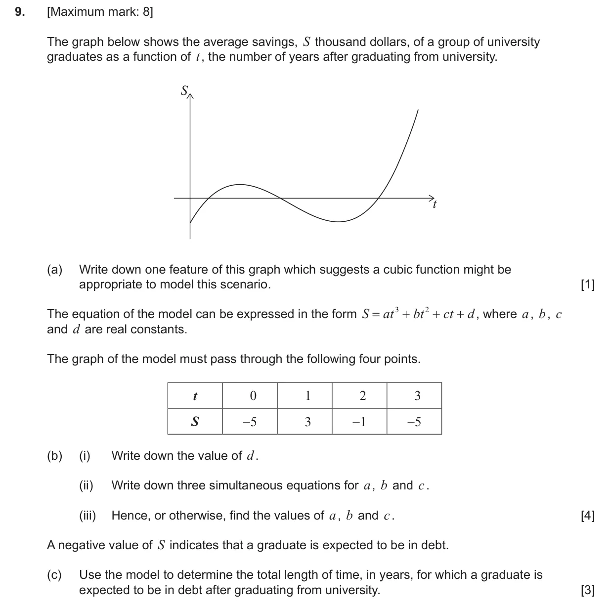
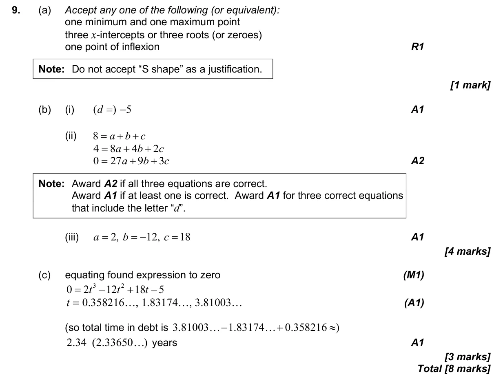

8 marks P1 TZ2 Calculator Appears in AI SL P1 Q9AI HL P1 Q5 2.6 The modelling process: choose, fit, test and use a model1.8 Solving linear systems and polynomial equations with technology2.4 Key features of graphs2.5 Modelling with linear, quadratic, exponential, power, cubic and sinusoidal functions Question Hide breakdown abc Markscheme 